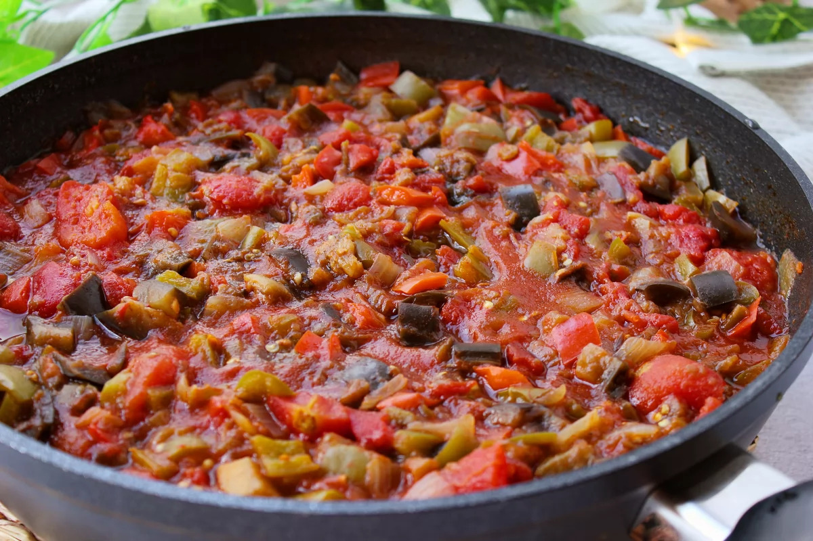
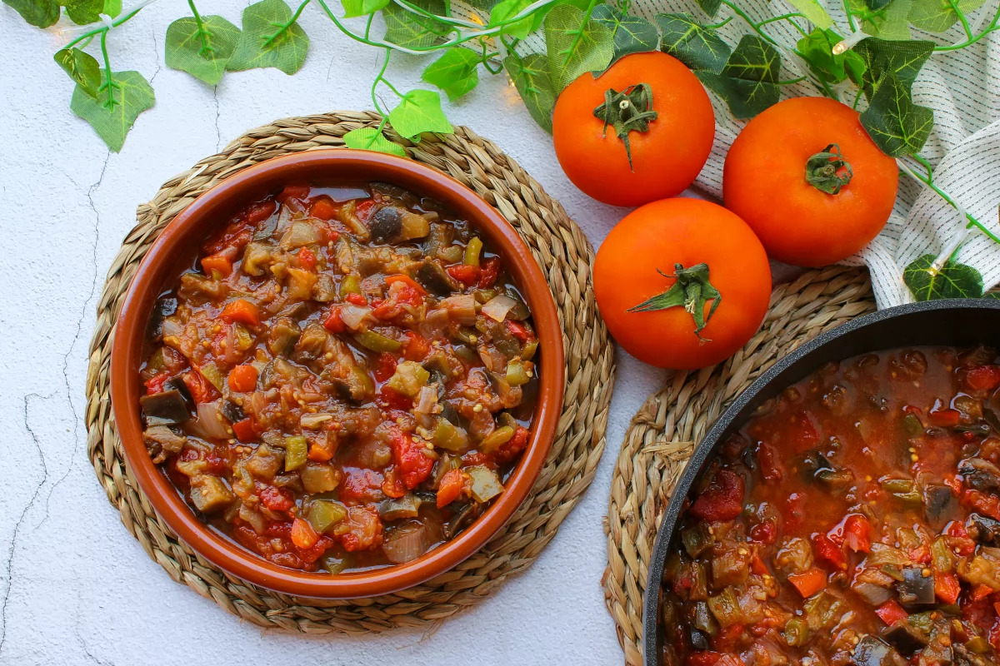

Gastronomía de la Región de Murcia
Pisto Murciano

Un plato tradicional de la huerta murciana
El Pisto Murciano es uno de los platos tradicionales de la gastronomía de la Región de Murcia. Su elaboración está vinculada a los productos de la huerta murciana.
Se prepara principalmente con diferentes verduras, entre las que destacan el tomate y la berenjena. Dependiendo de la receta también pueden incorporarse otros productos de la huerta.
Su sencillez y el aprovechamiento de productos de temporada han convertido al pisto en una elaboración representativa de la cocina tradicional murciana.


Características
- Elaborado principalmente con verduras.
- El tomate es uno de sus ingredientes principales.
- Está relacionado con los productos de la huerta murciana.
- Forma parte de la gastronomía tradicional de la Región de Murcia.